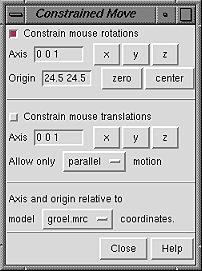

Constrained Move provides mouse modes for rotation and translation relative to axes defined in a model's frame of reference. Such manipulations are helpful for aligning structures with an axis of symmetry. There are several ways to start Constrained Move, a tool in the Movement category.
 Constrain mouse rotations reassigns the button currently assigned to rotation to constrained rotation. Likewise, Constrain mouse translations reassigns the button currently assigned to XY translation to constrained translation. Deactivating these options restores the previous rotation/translation behavior.
It is possible to have different buttons assigned to a constrained motion and the corresponding unconstrained motion at the same time. Buttons can be reassigned using the Mouse preferences. The constrained mouse modes are not shown in the preferences panel unless Constrained Move has been started.
Different axes can be used for rotation and translation. The three values in the Axis field specify direction. Clicking x, y, or z sets the direction along the reference model's X, Y, or Z axis, directions (1 0 0), (0 1 0), or (0 0 1), respectively. Any three values can be entered, however, and should be separated by spaces, with no commas or parentheses.
An axis for rotation is defined by a direction and an anchor point, or Origin. Clicking zero sets the Origin to (0 0 0), while clicking center sets it to the center of the bounding box of the reference model. Only a direction is needed to constrain translation.
It is not necessary to turn off constrained modes before changing the reference model, an axis definition, or whether translation should be parallel or perpendicular to the specified axis.